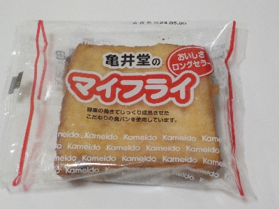

亀井堂のマイフライ
2024/05/05

こしあんのサンドイッチが油で揚げてあります。油シミシミです。
アンドーナッツに近いんですが、食パンなので甘さは少しマイルドです。
食パンが固めでボリュームがありました。プラス甘いのと油で、満足感がしっかりありました。美味しかったです。
鳥取県鳥取市徳尾122番地
2024/05/05

こしあんのサンドイッチが油で揚げてあります。油シミシミです。
アンドーナッツに近いんですが、食パンなので甘さは少しマイルドです。
食パンが固めでボリュームがありました。プラス甘いのと油で、満足感がしっかりありました。美味しかったです。